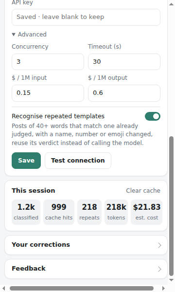
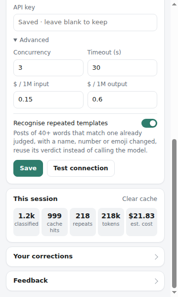
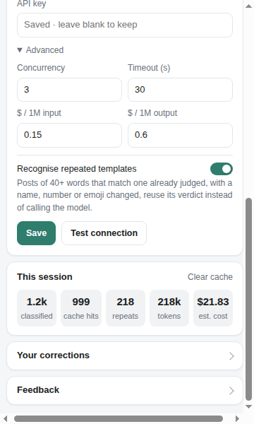
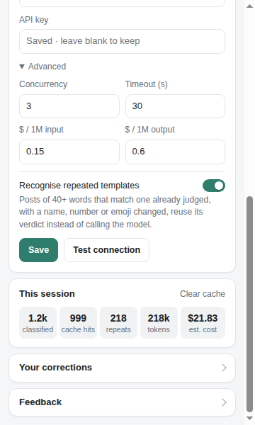
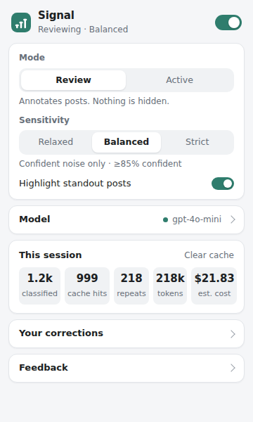
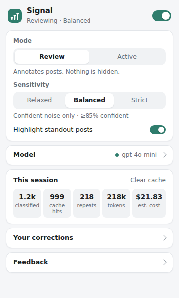
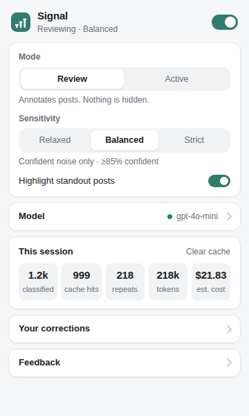
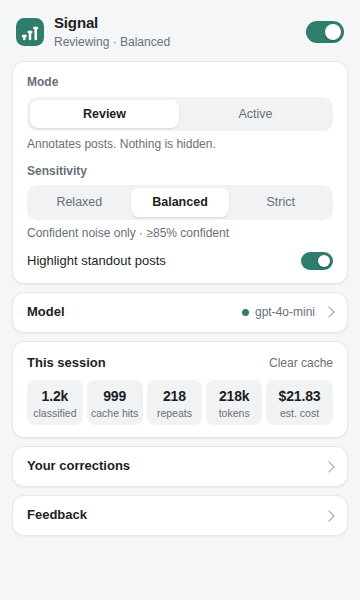
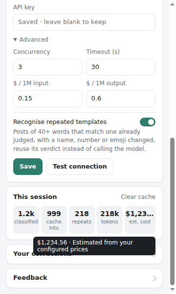

1 · Model + Advanced open → vertical scrollbar (Windows/Linux), scrolled to “This session” · wide font (DejaVu Sans)
BEFORE (shipped)
AFTER (proposed)
2 · Same, typical font (Liberation Sans ≈ Arial / Segoe UI / Helvetica)
BEFORE (shipped)
AFTER (proposed)
3 · All sections closed (no scrollbar, 360 px), realistic large values
BEFORE · wide font
AFTER · wide font
BEFORE · typical font
AFTER · typical font
4 · Extreme value ($1,234.56) → ellipsis, full value in the tooltip (tooltip drawn for the mockup)
AFTER · wide font · scrollbar